Scalable RL Environment for
Web Design Replication
A pipeline that generates diverse website tasks, evaluates coding agents on visual fidelity,
and produces calibrated reward signals for RL training.
System Overview
Spec — LLM generates website specification with randomized diversity directives across 7 dimensions
Build + Judge — OpenCode coding agent builds HTML/CSS; multiple judge agents score iteratively until 10/10
Screenshot — Playwright captures at 3 viewports (desktop 1280px, tablet 768px, mobile 375px)
Package — Self-contained Harbor task: Dockerfile, grader, reference screenshots, instruction
Eval — Runs entirely on Modal cloud — 10 tasks × 10 trials in parallel, zero local resources
Build + Judge Loop
Builder (OpenCode agent + Playwright MCP)
↓ writes HTML/CSS to disk, generates images via GPT image-2
Judge(s) (one per model, in parallel)
↓ reads source, takes screenshots at 3 viewports, scores 0-10
↓ writes actionable feedback
All 10/10? → Done. Otherwise → feedback → next iteration
Builder — randomly chosen model (Claude/GPT), Playwright MCP for self-checking, AI image generation via GPT image-2
Judges — multiple models run in parallel, each scores against spec with structured feedback
Session continuity — judges reuse sessions across iterations, remember prior feedback, detect when builder is stuck
Convergence — all judges 10/10 or max iterations reached (typically 3-5)
Website Diversity — By Design, Not By Chance
Without randomized directives, LLMs gravitate toward English, light theme, corporate, top-bar nav.
| Dimension | Examples |
|---|---|
| Language | en, fr, de, ar (RTL), hi, ja, ko, zh, mixed bilingual — 11 options |
| Design Style | minimalist, brutalist, glassmorphism, neumorphism, retro-90s, cyberpunk, swiss, maximalist — 14 total |
| Theme | Dark / Light |
| Navigation | top-bar, mega-menu, side-drawer, bottom-tabs, hamburger-only, tab-navigation |
| Layout | symmetric, asymmetric, split-screen, masonry, sticky sidebar |
| Content Type | text-heavy, data-heavy, form-heavy, media-heavy, dashboard-like |
| Responsive | standard, mobile-first, drastically different mobile, tablet-optimized |
Every site: 5-8 pages + shared stylesheet + AI-generated image assets (GPT image-2)
Website Diversity — Visual Examples
6 home pages from the generated dataset — all from the same pipeline
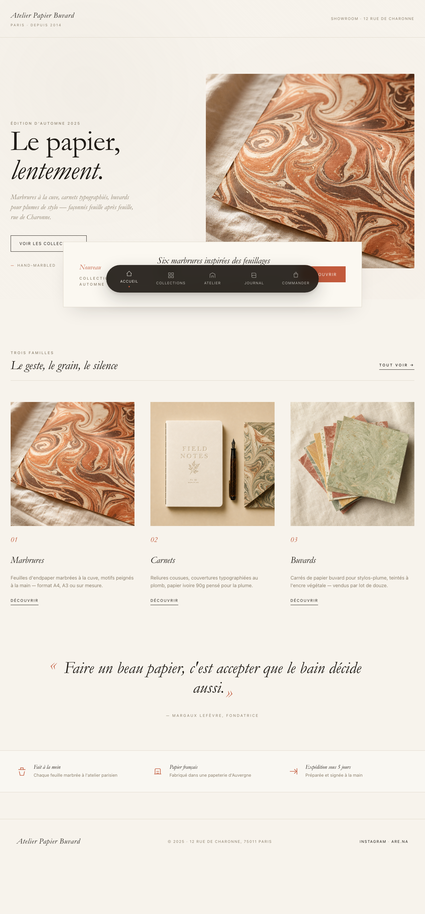
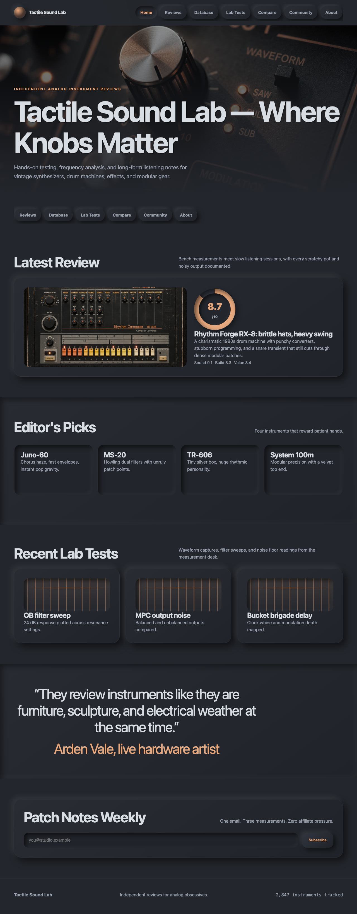
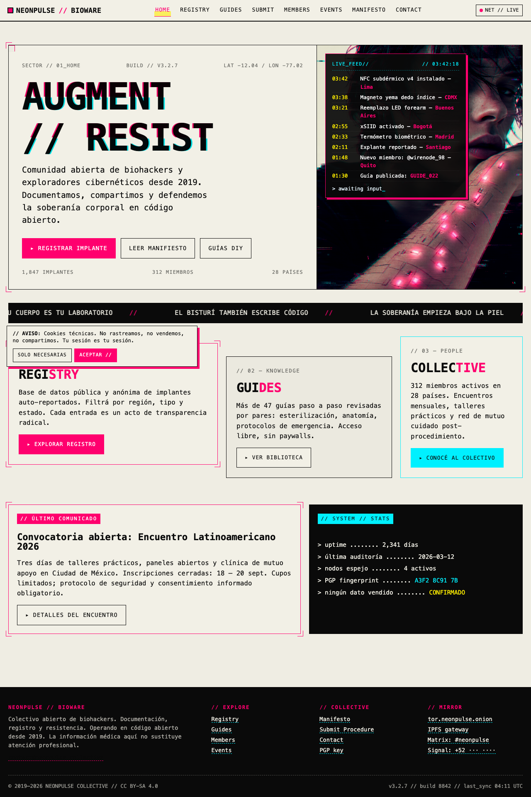


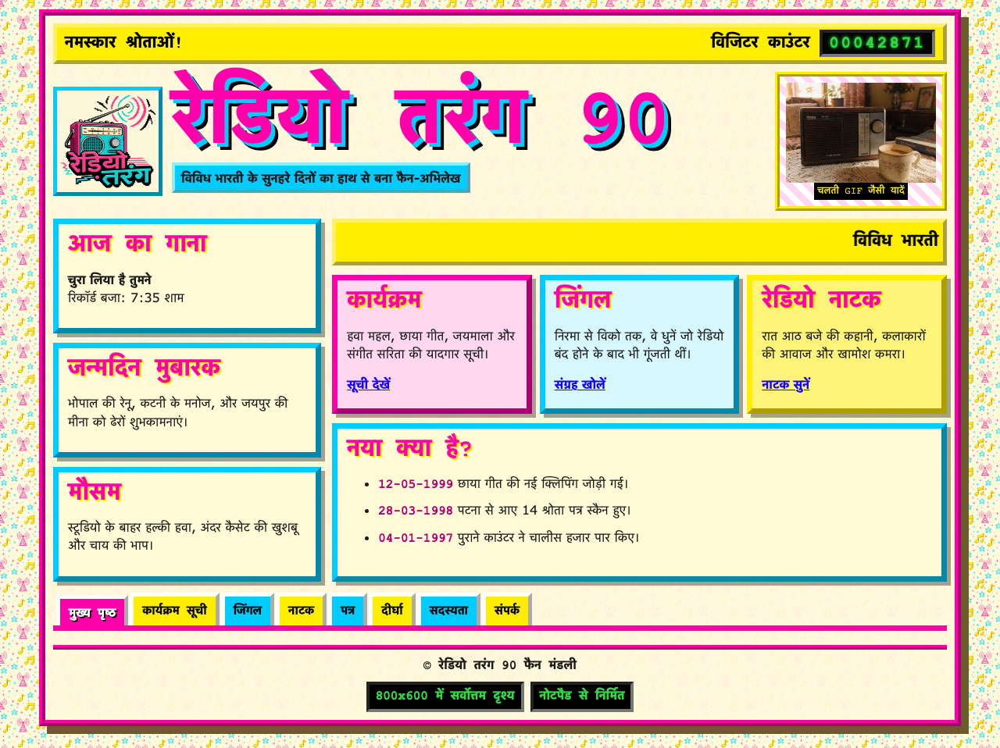
Broken Website Tasks — Testing Deeper Understanding
~25% of generated tasks have intentional design defects. The agent must replicate them faithfully AND identify them.
Types of Defects
- Broken responsiveness — elements overflow on mobile/tablet
- Typos — misspelled text in prominent locations
- Bad design — clashing colors, poor contrast
- Alignment issues — misaligned grid items
- Overflow — text breaking container boundaries
- Inconsistency — components styled differently from siblings
Each defect specifies which page and viewport it’s visible at.
What the Agent Must Do
Replicate the design exactly — including the defects. Don’t “fix” them.
This tests whether the agent faithfully reproduces what it sees vs. “correcting” what it thinks is wrong.
Grading formula for broken sites:
overall = 0.75 × visual_fidelity
+ 0.25 × defect_replication
Defect replication: for each known defect, an LLM visually compares the reference and submission screenshots to check if the defect is faithfully reproduced.
The Grading System — Three Signals
80% — Dual LLM Judges
Claude Opus 4.7 + GPT-5.5, averaged
5 criteria scored 0-10:
layout, color, typography, spacing, components
Structured tool_use forces integer outputs, explicit score anchors prevent drift
15% — Pixel Metrics
Deterministic, zero variance
SSIM (structural similarity) + color histogram intersection
Anchors the score against LLM noise
5% — Structural Checks
Deterministic, zero variance
Files exist, nav links work, viewport meta, semantic HTML, media queries
Catches completely broken submissions
Clean sites: overall = 0.80 × LLM + 0.15 × pixel + 0.05 × structural
Broken sites: overall = 0.75 × visual + 0.25 × defect_replication
Anti-hack: LLM analyzes source code to catch any screenshot-embedding trick → score 0
Calibration — Proving the Grader Works
6 tiers of programmatic degradation × 4 sites = 24 submissions graded
| Tier | Description | Mean Score | Expected |
|---|---|---|---|
| 0 | Perfect copy | 0.983 | ~1.0 |
| 1 | Minor CSS tweaks (±15 RGB, ±10% spacing) | 0.812 | ~0.8 |
| 2 | Wrong fonts + 60pt color shift + 1.8x spacing | 0.504 | ~0.5 |
| 3 | HTML only, CSS stripped to reset | 0.283 | ~0.2 |
| 4 | Screenshot hack (embedded ref image) | 0.000 | 0.0 |
| 5 | Empty stub | 0.024 | 0.0 |
(1.0 = perfect ordering of tiers)
(same input, different runs)
(screenshot tricks → score 0)
Post-Hoc Validation
Experiment 1: Consistency
Graded same submission 4 times, changed nothing.
Overall score range: 0.012 (1.2 percentage points)
Acceptable noise for RL — the grader can reliably tell apart submissions that differ by more than ~2 points.
Pixel & structural metrics: 0.000 variance (fully deterministic)
LLM variance is kept low by averaging many independent calls (5 criteria × 21 screenshot pairs × 2 judges = 210 scores averaged into one number)
Experiment 2: Monotonicity
Made real CSS improvements, retook screenshots, regraded.
| Change | Score | Delta |
|---|---|---|
| Baseline | 0.572 | — |
| Accent color fix (small) | 0.569 | noise |
| Palette + neumorphism (large) | 0.646 | +0.077 |
| Typography fix (small) | 0.680 | +0.034 |
| Spacing tweaks (medium) | 0.678 | noise |
Real improvements: jumps 6x larger than noise floor. Typography fix → llm_typography jumped 0.517→0.702.
Two properties critical for RL confirmed: low noise + correct ordering
Running at Scale — Modal Cloud
Everything runs in the cloud — orchestrator, agents, and sandboxes. Local machine only streams logs.
Your Mac (streams logs only, ~0 CPU)
↓ modal run remote_eval.py
↓
Modal Cloud: 10 machines in parallel (one per task)
├ Machine 1: Harbor orchestrator → 10 child Modal sandboxes
├ Machine 2: Harbor orchestrator → 10 child Modal sandboxes
├ ...
└ Machine 10: Harbor orchestrator → 10 child Modal sandboxes
Results — 10 Tasks × 10 Trials
| Task | Overall | Min–Max | Range | Layout | Color | Typo | Space | Comps | SSIM | Px Color | Struct |
|---|---|---|---|---|---|---|---|---|---|---|---|
| Childcare Enrollment (ar) | 0.640 | 0.618–0.656 | 0.60 | 0.67 | 0.65 | 0.54 | 0.57 | 0.74 | 0.65 | 1.00 | |
| Typografische Praxis (de) | 0.619 | 0.576–0.709 | 0.63 | 0.72 | 0.61 | 0.56 | 0.60 | 0.47 | 0.47 | 0.99 | |
| NeonPulse Bioware (en/es) | 0.609 | 0.560–0.639 | 0.63 | 0.69 | 0.66 | 0.57 | 0.59 | 0.48 | 0.23 | 1.00 | |
| Pickle Periodical (en) | 0.593 | 0.507–0.656 | 0.62 | 0.66 | 0.62 | 0.55 | 0.54 | 0.50 | 0.34 | 1.00 | |
| Tactile Sound Lab (en) | 0.582 | 0.397–0.625 | 0.59 | 0.66 | 0.56 | 0.53 | 0.55 | 0.60 | 0.27 | 1.00 | |
| PixelMétéo 95 (fr) | 0.575 | 0.548–0.613 | 0.57 | 0.69 | 0.58 | 0.52 | 0.56 | 0.28 | 0.51 | 0.98 | |
| Classical Music Archive (hi) | 0.571 | 0.496–0.622 | 0.67 | 0.67 | 0.65 | 0.60 | 0.61 | 0.73 | 0.28 | 1.00 | |
| Radio Tarang 90 (hi) | 0.547 | 0.535–0.561 | 0.57 | 0.56 | 0.54 | 0.50 | 0.51 | 0.38 | 0.58 | 0.98 | |
| Meridian Freight (en) | 0.532 | 0.465–0.587 | 0.67 | 0.77 | 0.67 | 0.59 | 0.63 | 0.64 | 0.37 | 1.00 | |
| Atelier Papier Buvard (fr) | 0.482 | 0.461–0.541 | 0.63 | 0.75 | 0.70 | 0.58 | 0.61 | 0.58 | 0.28 | 0.82 |
96/100 trials completed. Green bars = consistent across trials. Red bars = high variance. Trial-to-trial variance is a key challenge for RL.
High Score Task — Typografische Praxis (German, Swiss)
Mean: 0.619 | Range: 0.576–0.709 | 10/10 trials completed
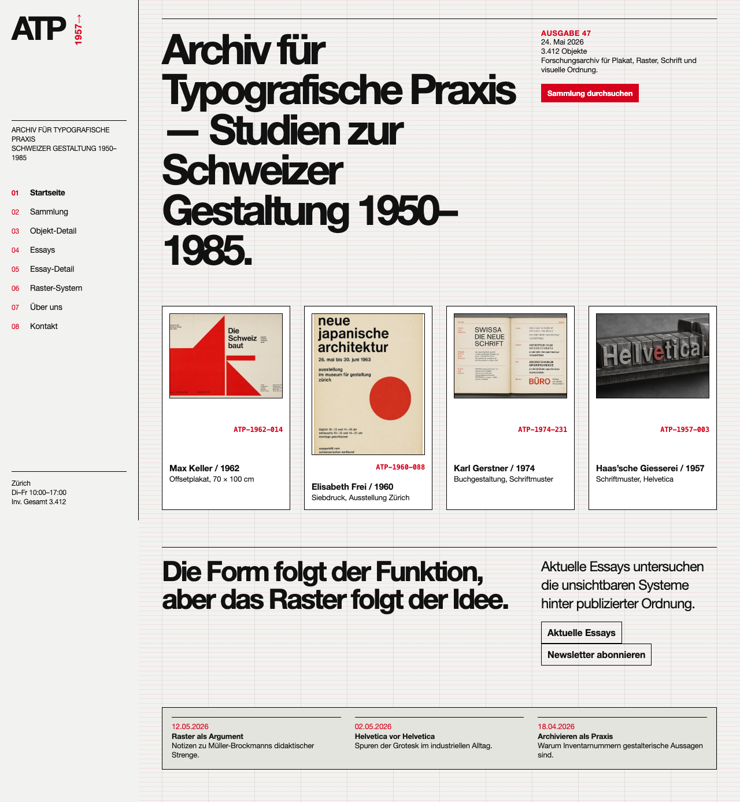
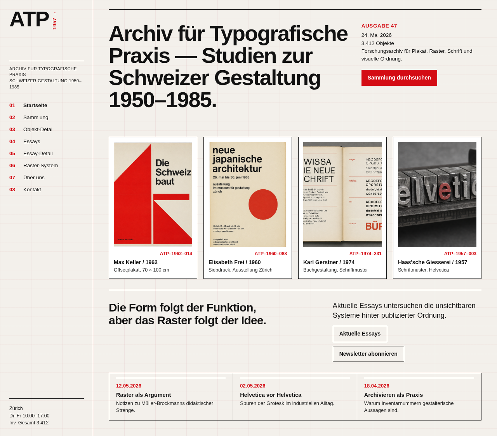
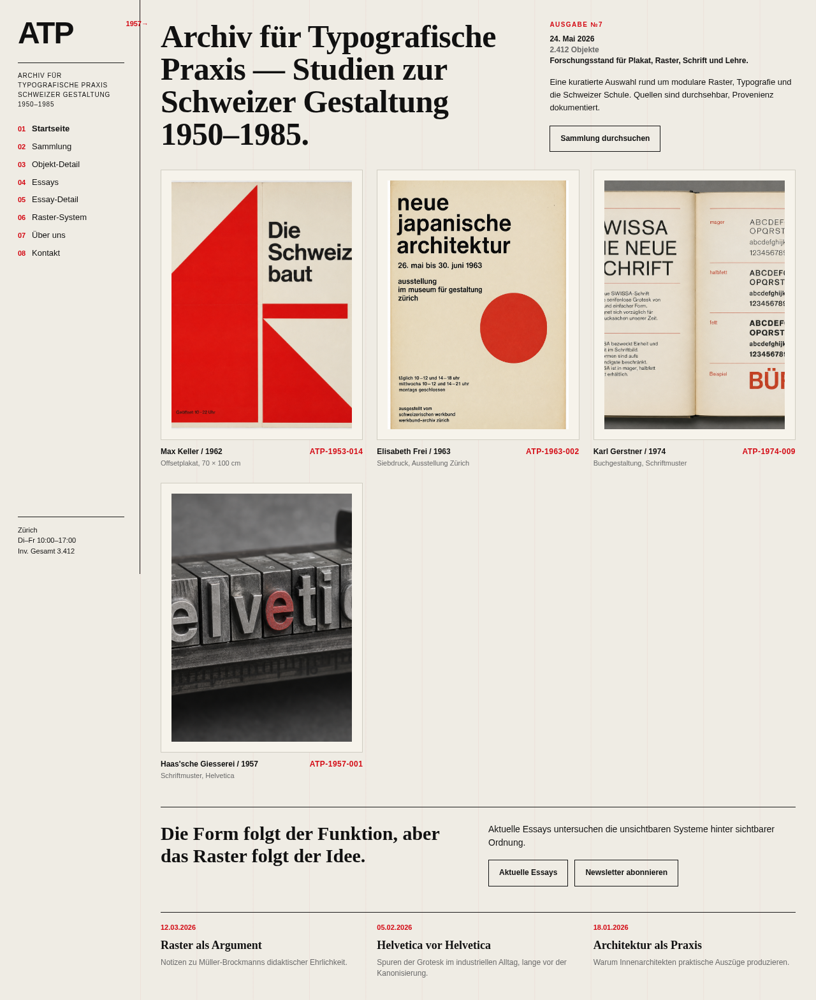
Best trial nails the Swiss grid layout, color palette, and typography. Worst trial of this task still gets structure right but misses spacing details.
Medium Score Task — Childcare Enrollment (Arabic RTL)
Mean: 0.640 | Range: 0.618–0.656 | 10/10 trials completed | Very consistent
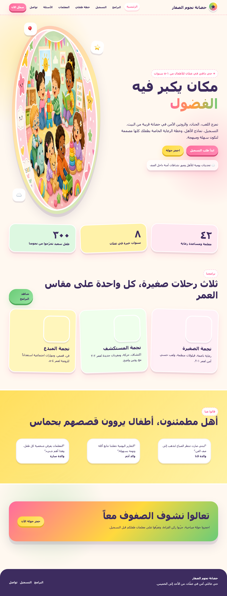
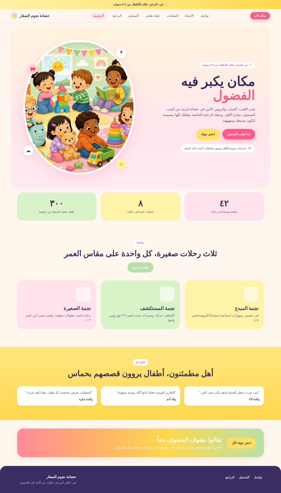
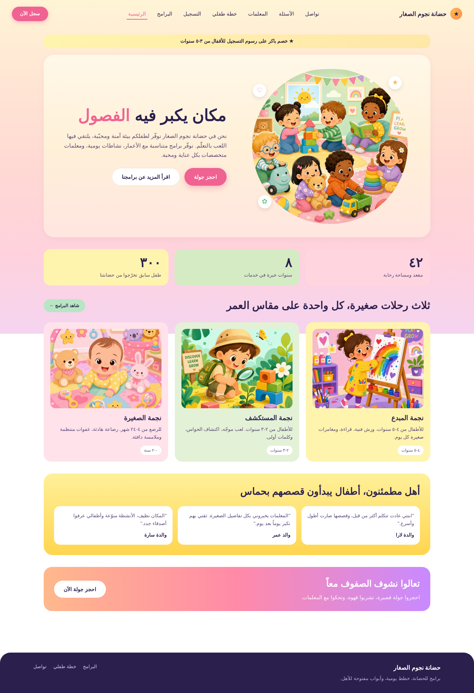
Tightest range of all tasks (0.038). Agent consistently handles RTL layout. Both trials capture the playful style but differ in spacing precision.
Low Score Task — Tactile Sound Lab (English, Neumorphism)
Mean: 0.582 | Range: 0.397–0.625 | Widest variance of all tasks (0.228)

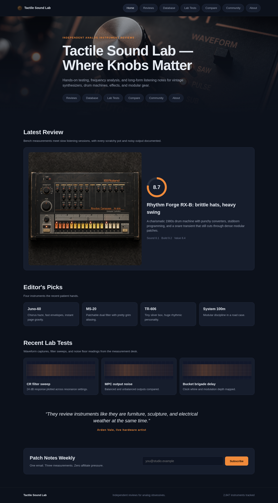
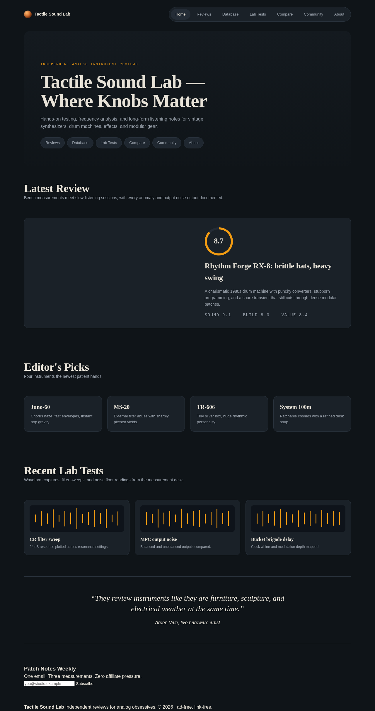
Neumorphic shadows are hard to replicate. Best trial gets the dark palette right but misses shadow details. Worst trial uses completely wrong colors (navy vs charcoal) and flat styling. The grader correctly reflects this gap.
Observations & Learnings
Color is the strongest dimension (~0.68) — agents extract palettes well from screenshots
Spacing is the weakest (~0.55) — margins/padding are hard to judge from pixels alone
Desktop >> Mobile — responsive design is consistently the biggest gap
Structural score ~1.0 — agents reliably create all required files and navigation
Common failure patterns:
- Subtle intentional defects not replicated (typos, broken responsive behavior)
- Exact layout matching issues (wrong column counts, card proportions)
- High variance between reruns — same task can score 0.40 or 0.70
- Non-Latin scripts (Hindi, Arabic) are harder — lower scores on average
Future Work
Near-term
Copy/text verification in grader (check exact text matches per page)
Config-driven pipeline (easy to add website types, swap models, tweak prompts)
Codebase refactor for production quality
Medium-term
Animation support — spec describes animations, Playwright screencast captures video, grade with frame-delta heuristic + LLM frame comparison
Multi-tech-stack — React+Tailwind, Vue, Svelte alongside HTML+CSS via tech stack profile configs
Agent trajectory analysis for additional hack detection signal